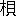

人類の進化は風俗に支配さるること大である。
而して風俗の根本は、主として宗教的意識より導かれるもので、宗教の原始的意識は昔の神話に現れ、その神話が
漸次に進化して、多神教より一神教となるに至ったが、風俗の進化は即ちこの宗教の進化と相伴っている。人類は社会的動物であって
離鮮索居の孤寂が忍び難く、友を求めて共に歓楽するを喜ぶ。その故にここに風俗なるものが形成される。而してそれが宗教的生活と深い因縁を結ぶは何故ぞというに、元来宗教的意識なるものはあるいは神を恐れ、あるいは超自然的の力を信ずる事に存するので、そのために自己もしくは自己の家族、更に自己の民族のために、あるいは災害を免れんことを祈り、あるいは幸福安全を与えられんことを祈るに至るのだが、その祈りは一人よりも二人、二人よりも三人と言うが如く、衆を加うれば加うるほど力を生ずるように感ずることは人情の自然である。これが即ち寺院教会等の起源を為すもので、宗教も
畢竟社会現象の一たるものだ。
然るに社会的生活には、多少その間に娯楽なき
能わず。ここに於て、
歌舞音曲がいずれの国、いずれの派の宗教にも必然に具在するので、原始時代よりその如く、今にもその原始的生活を持続する野蛮の間にそれが見出される。多数集りて厳粛に
祈祷するや、やがて讃美歌を歌い楽器の声がこれを助ける。更に起って舞踏をする。これ人類自然の性情の発動であって、かくの如きところに人々相親しむの機会が与えられ、これが風俗の根本を為して、一郷一党より更にその輪波を拡げて一国一民族の間に及ぼすことになる。風俗に純あり、不純あり、善あり、悪あり、従って善果のみとは言い難く、悪果もまた
頗る大なるものが有るけれども、それの
如何に論なく、その社会に及ぼす力の甚大なる一事は承認せなければならぬ。
特に歌の起源を考うるに、有史以前未だ文学あらざるの時に在っては人々読書により、もしくは読書を聴聞することに由って快楽を取ることが出来なかったから、自然に歌なるものが生れた。文字なければ記録の以て事実を後世に伝うることも出来ぬ。これに於て物語が生れる。物語は即ち事実をば音調によって面白く排列し、これを
諷誦すれば自ずから一種の声律を為して人の快感を誘うものであるから、つまりこれもまた一種の歌である。歌であるが故に、人々口より口に伝えて事実が永く
後昆に伝わるものである。歌声の
滑かに揚る処には自然に多く人が集る。即ちこれは社会的のものである。支那にも詩経あり、
雅頌よりして各国の国風まで収録した詩集であるが、詩は
之なり、志の
之く所なりとも称し、孟子にも詩三百一言以てこれを
掩えば思い邪なしともいい、我が朝の
貫之もその古今集の序に於て「やまと歌は人の心を
種として
万の
言の
葉とぞなれりける」と説き、「花に住む
鶯、水に住む
蛙の声をきけば、生きとし生けるものいずれか歌を
詠まざりける」とも述べおる如く、誠の声は
能く人を動かす。人心を導く上に詩は最も有力なるものであるから、支那の哲学者達もこれを重視し、さてこそ詩経と称してその五つのバイブルの中の一に加えたのである。即ち孔子の如きは、「風を移し俗を
易うる、
礼楽より善きは無し」といっているので、既に楽といえば歌は必ずこれに伴う。彼は風俗を改むるにこれに
優るものは無いと着眼したのである。上来論じ来りたるところによって自ずから分明なる如く、本来宗教的意識と芸術的意識とは、相離るる
能わざるもので、
而してこれが風俗の根本であり、それの向上するもここに於てし、堕落するもここに於てする。これ
鄭の子産が音楽を聞いてその国の治乱を知ったゆえんである。支那の古代はかくの如く音楽に重きを置いたから、自ずからその雅正なるものの発達を見たのであるが、今や次第に衰滅し音楽と称すべきものの残存するものいくばくもなく、
僅かに
郢風鄭声［＃ルビの「ていふうていせい」はママ］に適する
月琴の類があって、その花柳に
弄ばれているくらいのものである。日本とてもまた同じく、一時
雅楽は平安朝の宗教全盛期と共に大いに起ったけれども、僅かに三、四曲の大阪の天王寺辺にその
余韻を止むるばかりで、その他は全く
亡び了り、淫猥なる三味線がもっぱら温柔郷裡に
跋扈し、
緑酒紅灯の間を周旋するに止まる。琴曲ことごとく雅正ならずといえども、これを三味線に比すれば優にその選を
異にするが、これの中流以上の家庭に幾分残存するのがせめてもの幸いである。国を憂うるの士は
須らくこの間に
瞑目一番、潜思すべきである。
風俗の本は家に在る。日本は特に古来家族制度が発流して、今なおその遺風を守っているが、日本のみでなく世界至る処、風俗の本は家に在る。
而して家の本は夫婦であるから、自ずから風俗の本は更に夫婦であるという結論になる。人倫は端を夫婦に発する。神話的に見るも日本には
伊弉諾、
伊弉冉の両
尊がこの民族の始祖たる如く、
基督教でいえばアダム、エブの二人が
吾人人類の始祖である。即ちこれらは皆夫婦なので、夫婦なくんば子孫の繁栄を期する
能わず。これは生物学上自明の理で、人類の蕃殖ということは両性よりする。個人が相結んで社会を形成するその根本要素はここに存在するので、義務の観念はこれより萌芽し、道徳の
曙光はここに顕現する。
両性の関係はかくの如く重
且つ大なるものあるに
拘わらず、古来この問題が
如何ほど研究されたかというに、
甚だ怠られて来て居る。東洋に最古の文明を有するものは支那で、天才的哲人も輩出したけれども、この問題はあまり深き研究を経ず、ただ漠然
陰陽説の仮定に
本づき、その消長に依って男を天に配し、女を地に配し、自ずからその間に上下の位置を定めているので、五倫の大綱を立てて夫婦の一綱をその中に加えておくけれども、
然らば、その夫婦別ありという具体的の解説
如何と問えば、それは夫唱婦随であると答うるのである。
而かも
茫々四、五千載、太古に定められたるこの唯一の原則を守ってなんら疑うを知らざる如きは何に依るか。道徳説の築き方に多少の相違はあるけれども、
印度もまたこの婦人問題に、真実解釈を欠けるは支那と同様である。仏者に問わば、例の女子は三界に家なしの流義で既に解決されて在るというか知らぬが、かくの如きは
勿論甚だしき独断の
誤謬に
捉われたものである。然るに彼等は
秋毫も怪しまず、何が故に女子に罪多くして三界に家無きかに対しては疑問を提起しておらぬ。今
基督教国たる欧米諸国は東洋の異教国と異なり、女子の地位を
頗る高めて認めているようだけれども、これを
希伯来、
希臘、
羅馬の古代に
溯ってみれば、女子の権利は著しく男子の権力の下に抑圧されていたので、未だその余習を脱し得ずにいる。即ち洋の東西を
挙り、時の古今を徹して、両性問題の真実の解釈を怠りおる点は同軌である。
両性間に重んずべきはその結婚であるが、その結婚史の発達の跡は、自ら宗教史の発達の跡に似ている。宗教史の初めは自然崇拝であり、日月星辰、山川草木、禽獣虫魚に至るまで、なんらかそれらに偉大なる霊力を感ぜしむるものあれば、
直ちにこれを信仰の対象としてその前に
額伏し災厄
祓除、幸福希求の祈祷を捧げたが、人心の統一を欲するや、やがてはその宗教は進化し、多神中の最有力なるものを発見して他を支配せしむるに至り、ついには純然たる一神教とまでなったのである。吾人の結婚史もまたその如く、その原始的生活に於ては人類と他動物との間にさまでの
径庭なく、皆雑婚で、目迎え目送って
相可なりとすれば、直ちに相握手して
憚らず、なんらその間に
厳粛なる制限の存在せぬのであったが、人類に本具の良智良能、換言すれば、その理性自然の命ずる法則に従ってかくの如き雑婚が決して人類の発達を助くるゆえんのものに
非ざるを
悟了するに至った。何となれば雑婚の子には母ありて父なく、父あるも父の誰なるやが知れぬ。家の本は夫婦というても、かくの如き家には婦ありて夫なし。即ち仮りにここに家というとも、夫なくんば家を成さぬのである。
是に於て、次いで現れたるものは一夫多妻である。これは気候地理もしくは迷信等諸種の原因あり、また
賤しむべき
掠奪等の歴史もあるが、とにかく権力あり富力あるものが自分一人に
沢山の妻を専有するのである。しかしながらかくの如きもまた決して人類の繁栄と進歩とを期すべからざるものなるが故に、次第にこれを否認するに至り、ついに
基督教
出で厳粛なる一夫一婦説を提唱し、世は次第にそれに化せらるるに至ったのである。
基督現れて
僅かに二千年、人類は少なくも有史以来六、七千年の歳月を
閲しているのであるから、その前四、五千年間は禽獣と等しき、もしくはこれに近き雑婚あるいは一夫多妻等が持続されつつあったのである。これを思えば今日一部に現れし雑婚に近き自由結婚と、厳粛なる一婦説の良否は、既に採決を経たる自明のものとして歴史的真理が明瞭に吾人に物語りつつあるもの、即ち一夫一婦制は、吾人の理性が天則によって示されたる人類の
履むべき当然の道に
辿り着いたものと見なければならぬ。
さればこそ紀元前三、四世紀の交に
基督教の
羅馬に入り来り、神力に頼る大なる威厳を以て、千古の疑問たる婦人問題に一夫一婦制の解決を下すや、多少の反対はあったけれども、
汨々として
［＃「汨々として」はママ］漲り来る潮勢の
拒ぎ
難き如く、ついに欧米の文明諸国に
瀰漫し、法律の上にも実現されて婦人の社会に占むべき地位は確保され、次第に一家の主人たる観を呈するに至った。しかしながらこれを男子に比すればなお甚だ低級なるものあるにより、四囲の社会的状態と婦人の自覚の開くるとに従い一種の連動を起し、ついに
新西蘭、
那威、北米諸州に於ては婦人の参政権を許し、近頃英国に於てもまた大多数を以て婦人に参政権を与えた。即ち欧米諸国には男女が次第に同一の地位を社会に占めつつあるのである。これに対して東洋諸国はどうであるか、その弱点多き中にもこの重要なる婦人問題の解決されぬ事は、少なくとも東洋の道徳に
些かの進歩なきを証するものである。二千年前の立法者の定めた所のものを
不磨の経典として少しも疑うこと無く、これに違える新来の思想をばことごとく異端視するが如くんば、なんに由ってその国歩を進め新文明と対抗することが出来よう。
婦人問題の解決し難きは立法者が男子のみであるからだ。元来東洋では男子の権利を認めて婦人の権利をこれと同等に認めぬが、然らば婦人をなんと見るか。婦人とて禽獣で無く男子と等しく人間である。両性並存せずんば
種の
蓄殖は無かるべく、男子と婦人とは、共に社会を構成する経と緯とである。然るに独り経を重んじて緯を軽んずるという道理はない。一体
可笑しいことには用語の上より考うれば、西洋では祖国、即ち本国という語は、英語に於ても、仏語に於ても、はた
独逸語に於ても父の国という意味を有するに反し、東洋では必ず父母の国と称し、一方を偏重して父の国、もしくは母の国というが如きことをせぬ。これよりすれば西洋こそ男尊女卑の国であり、東洋はこれに反して両性を平等視する国で有るべきに
拘わらず、事実の示すところはこれに反し、西洋諸国に於て早く婦人の社会上の地位を認めおるに、東洋諸国ではこれを認めておらぬ。天賦の体質の上より見れば言うまでもなく男剛女柔と分れるが、柔
能く剛を制す。男子の足らざるところは女子
能くこれを補い、女子の足らざるところは男子能くこれを補う。
互譲の精神を以て相頼り相助くるところに男女の義務が存在し、美しき道徳の根源はここに
涵養される。即ち婦人には懐胎という自ずからなる天の使命あり、すでに分娩すれば家業は出来ず。また授乳する故に食欲は二人前にも暴進する。
而してその食美ならざれば乳量減ずるを以て、これを養うべく男子は平生の二倍以上に多く働かなければならぬ。これは男子にとって避くるを許さぬ義務である。しかしながら男子に養わるる女子の義務もまた甚だ重大なるものである。
即ち第一に、懐胎分娩の苦痛の忍ばざるべからざるはもとより論なく、
孩提の小供に添乳しまた小用をさする。更に小供がやや長じて言語を知るに至れば、一切の動作進退はことごとく母親が導かなければならぬ。小供はやがて外に出でて近隣の小供と遊戯するが、これ人間の社会生活を見習う初階で、他日社会の一員として活動する人格
如何は、おおよそこの時に於て定まるものだから、これを指導する母たる者の天職は甚だ重大である。昔から偉人の母は賢婦であるというゆえんはここに在るので、小供は感化を多く家庭に於ける母より受ける。かくの如く婦人は
到底無器用なる男子の出来ぬ多くの労力を自らするのであって、
其処に自然に男女間の分業が行われる。が、この分業から一種の
弊が
萌す。女は内を守り、男は外に労するがために、外に労する男がややもすると放逸に陥り易く、ついに
頽風汚俗を
醸すに至る。近来段々農村の風俗までも悪化され行くというが、その
然るゆえんを
繹ぬるに、鉱山の開掘、各種の工場の開設、もしくは鉄道敷設水力電気工事という如きなんらかの請負事業でも始まると、
其処に集るものは男子の労働者であって、女子は少ない。これら男子の労働者が、
無聊を慰すべく
旗亭に集るや、相手無しには飲めぬから、ついに酌婦を招いて
悪巫山戯をする。するとこれが一種の御手本になって村の若者が直ちにこれに悪化され、郷党の風俗崩壊の端を
啓くのである。かくの如きはなんに因るかというに、婦人を内に
幽屏して外に出られぬ者になしておくからである。婦人が社会に地位を占めて男子と同等の権利を有し、男子の
赴く場には女子もまたこれに赴くを得るというが如くであれば、かくの如き頽風汚俗も、その発芽を見出さぬであろう。即ちその証拠には、寺とか宮とかいう所に多くの男女が相集り歌を謡い、楽を奏して神霊を喜ばしむると同時に、自らもその団体的娯楽によって
鬱懐を散する場合には、なんらの弊害なく、低級なる三味太鼓のざんざめきで、馬鹿囃子をやる如き騒ぎをしても、かくの如き処に卑猥なる所行の現れることが少ない。これに依ってこれを見れば、婦人の解放は風俗上より熟考すべき一問題である。
日本は従来比較的厳格なる封建制度を以て民風の廃頽を制しつつ来たものであるけれども、
而かもなお十分にこれを制するを得ずして幾多の悪風を醸したが、かくの如きは
畢竟婦人を人間として男子と同じき人格者と認めず、外に出でて具体的に多数の者と交わることを許さぬためである。もっとも婦人をしてこの域に達せしむるには十分なる教育が必要であるが、昔は教育は婦人に有害なりとのみ認め、女は己を愛する者のために
容るという語も有る如く、女子はただ男子を
慰藉するためにのみこの世に存在するものと認められていたから
致方ない。而してこの極まるところは、ついに婦人をして虚偽の道徳を守らしむるに至ったのである。外敵に苦しめらるる国民は嘘を言うという事だが、これには至理が存し、女子は
初中終男子なる内敵に苦しめられているから、ついには嘘が上手になる。嘘というと一概にこれを賤しむるが、嘘は常に弱者にとっての唯一の武器である。例せばここに
貪官汚吏あって
苛斂誅求を事とし、一村に対して一万円の負担を命ずる事ある場合に、仮りにその村民をしてその官吏に対し五千円の賄賂を贈り、彼をしてその誅求を思い止らしむることが出来たとしたならば
如何であるか。贈賄は卑劣の行為なりとするも、
而かもその卑劣の行為を忍ぶことによって五千円を贈与するも、なお差引き五千円を利し得る。これ
如何なる世にも贈賄の
已み難きゆえんであるが、男子に対する女子の嘘もまたこの類である。女をして嘘を言わざらしめんために女大学の如き著述あるも男子のことを少しも説かず、女子に対してなんらの権利を与えず陰陽天地の理法を仮説して、それに依ってただ服従の義務を説き、女子は男子に対してあくまで柔順なれとのみ教える。夫に対して貞淑なれと教える。胎教とて、妊娠時にも、坐作進退の
些事より、一切の心得について一向厳正なれとのみ教え、
而して女子に対してかくの如き要求をあえてする男子の所行
如何と顧みるに、甚だ
放縦不羈である。
然らば婦人に血の有る、自己独り絶対服従を肯てすることが出来ようぞ。
而かも力及ばず。これ女子の男子に対して、ついに虚偽の行いあるゆえんである。多くの女子は男子に対して
佞媚であり、男子はややもすればこれに魅せられて身を誤る。これに於て人の国を傾け人の城を傾くると称して女子を恐るるが、諦観すればかくの如きは女子何すれぞ男子を
欺かん。男子が自ら女子に欺かるるので、
而かもそのここに至るは因果は廻る小車の如く、前に自ら女子を欺きたるその応報の
覿面に示現したのに外ならぬ。即ち男子が自己に都合好き得手勝手の解説を下し、真実の婦人問題の解決を下さぬがためである。今や世界の大勢は急転直下して、社会主義が当面の問題と為りつつあるが、更にこれに譲らぬものとして婦人問題が提供され、しきりにその解決を迫っている。
人類は本来男女同数なるべく、またならざるべからず。多少の差あり、出産の率よりいえば女子の方が男子よりやや多いけれども、女子は多くは幼時に死ぬから自ずから平均がとれ、男女の数には大差無かるべきはずである。
然るに外国では、
如何にせん女子の方が多いというから、人類にはその間になんらかの欠陥あることと思う。更に人数を以て女子を男子よりも多からしむる原因は、近来大規模の工業が起り、また鉱山が開掘され、これらの危険なる事業には独り男子のみが従事するからである。即ち米国辺の鉱山では年々無数の人が死傷し、義手義足の
徒は、米国に於て最も多く見受ける。従って義手義足の製作術に至っては、米国はその精巧世界に冠たり。欧州諸国もある程度までその術が進歩したとはいえ、到底米国に及ばぬ。
独逸の如き機械国でも、なおこの義手義足だけは輸入を米国に仰ぐという有様である。以てその然るゆえんを推知し得よう。また急速に鉄道を敷設しおるが、これにも被害が
夥しい。
而して女子はこの種の危険性を
帯べる事業には従わぬから、女子の死傷は無い。海外移住にも男子が多く
出で、女子は少ないから、勢い本国には女子のみ多く残るゆえんである。英国の如きはこの大戦前に既に、女子の数の男子に超過すること百三、四十万と称せられていた。北米合衆国、その他の殖民地は除外例として、その他の国々もまた皆女子の数が男子よりも多い。然るにこの男女の人口の不平均を更に大ならしむべくこのたびの大戦争が現れ、急劇なる変化を来した。これによって欧州諸国の壮年が
如何ほど死んだか精細には知らぬけれども、あるいは一千万以上の死者を出すに至るかも知れぬ。現に
丁抹コッペンハーゲンの戦争研究協会公報を見ると、開戦以来満二ヵ年に於ける双方の戦死者のみでも四百六十三万一千を算している。しかしこれには日独戦争の戦死者もまた双方の病死者も計算されていないし、またその当時より既に一ヵ年を経過していることであるから、今日では全体で約一千万を失っているに相違ないと思う。
蓋し近来の戦争は多くは
塹壕戦である。その塹壕は従来の如き、小規模で浅く掘り上げたる土を以て身を

すだけの
堤を築くとは大いに異なり、地中に深く
※鼠［＃「鼬」の「由」に代えて「偃のつくり」、U+9F34、122-16］の如く穴を掘り一丈も二丈も下に潜むというから、かくの如き生活の人体に影響するところ大なるべく、病死者は従って多くはないかと思う。露のブロッホはかつて書を著し、兵器の進歩は人を殺すこと多く、ついに戦争を不可能ならしむるに至るべしと説いたが、かのその書を著した当時よりも各種の兵器は更に長足の進歩を為しているから、人を殺すの率は驚くべく増大したけれども、この大戦は未だ終結期を予想し難き有様である。もとより敵味方共に、幾千の死傷を出しているが、互いに秘密にし合っているから分らぬけれども、とにかく三年以上も現在の如き大規模の戦争をなすに於ては、その死者を出すことも必ず大ならざるを得ざることと思う。
是に於てか女子は交戦列国共に皆不自然に多数となるに相違ない。
更に一転して職業の上から考うるに、従来でも欧州諸国では女子が各種の職業に従事した英国の如きも、戦前女子の生産業に従事せる者は、十五歳以上の者だけでも約四百万を算し、まさに総数の三割四分を占めていたのであるが、戦後男子は皆兵伍に入ったために、農工業共に人不足でこれを補うべく女子の労力を要すること著しく、今日では農業でも、製造業でも、鉱山でも、鉄道でも、皆女子が関係している。女子の労銀は男子より安く、一週間男子が二十円ならば女子は十円で
宜しいという割合である。
勿論女子にしてもその業務に習熟すれば、男子に近き賃銀を得るに至るのであるけれども、大体に於て男子より
廉く、
而かも器械を使用するに於てはその能率に多大の優劣はないのであるから、なんとしても資本家にとっては女子を雇う方が利益である。
是に於てか、男子がこの大戦後元の職業に復帰せんと欲して戻って来ても、一たび女子に占有された職業を容易に回収する事は
難かるべく、ために女子もまた経済上に於ける大勢力となり、ここに男女の権利に対する一大争議が起るに相違ない。これは単純なる問題でなく、関するところ甚だ大なる重要なる社会問題である。女子の地位が社会上に増大すると同時に、これを立法上に
如何に調和すべきかの問題が次いで起って来る。
婦人問題に最も大切なるものはその結婚であって、男女の数が相等しからず、その率に大なる相違があると、夫の持てぬ婦人の増加するは自然の数である。この夫を持ち得ぬ婦人が実に社会のバチルスとなって風俗を腐蝕せしめる。現に
独逸の
娘子軍は、
紐育、
市俄古という如き北米の大都市に遠征して
跳梁を極めており、英国辺でも等しくこの娘子軍の累を受けているが、この
禍いは
何時までも外よりのみは来らず、男女の人口率の著しき不平均はついに内よりこの禍いを醸すに至る。その結果は必ず怖るべき
花柳病となって現れるが、現在では英国の如きは、花柳病の最も少なきを以て称せられているけれども、これが果して永続出来るか否かが問題である。なんとなればこの大戦後は、女子の数の男子に超ゆること従来に数倍するに至るからである。一歩を誤ると、かくの如くしてこれまで進歩した文明も、根本より転覆されるかも知れぬ。仏の人口の如きはある部分には全く繁殖が止まり、英国の如きも都市の人口繁殖率は著しく鈍化し、あるところには全く止っている。これに反して、
独逸は最も優れたる繁殖率を有すといわれていたに拘わらず、
伯林の如き大都市ではすでに繁殖が止まっている。北米のニュー・エングランド地方の都会でも繁殖は止っている。
而して人体の発育が漸次に悪化し、全体の調和のとれぬものが漸増して来る。肉体精神共に円満なる発達を要するにかくの如きものが到底今日の文明を伝えて、
更にこれを拡張し得べき道理がない。これは遺伝進化の理よりいうと、婚姻に
根蔕するは争うべからず。即ち正当ならざる婚姻の次第に行われつつあるを立証する。
否近次欧州諸国に於ては婚姻を喜ばざる悪傾向がある。独身ものが増加しつつある。出産の減少はこれがためか、あるいは別に人為の罪悪によるか、
抑々また両者共に行わるるがためか、研究すれば必ず大なる原因を発見し得るであろう。近来は二児主義とか、三児主義などという如きものが黙認され、学術の進歩に依り巧みに妊娠を避けて、ただ本能なる情欲をば遺憾なく遂げ、以て人生の幸福とするが如き傾向に進んでいるのであるが、かくの如きは言うまでもなく天理に反抗を試みる明白なる罪悪である。彼の独身生活という如きも、一見俗念の外に超越しおる如くであるけれども、その実隠微に働く情欲をば制し得ず、あるいは却ってこの情欲を
放縦ならしめんがために好んで独居するものも多いのであるから、風俗を乱すの禍因はむしろこの独身者によって多く醸出さるるものである。かかる両性間に生れた子供が、即ち不完全なる体質を有するは争われざる事で、好しや一歩を譲って、五体は完備するとしても、必ずその精神上に、不純の痕跡を印するを免れ難き故に、これが長じて社会生活に加わると一般の風俗を悪化する。
而して婦人の激増はついにこの傾向を助長せずんば
已まざるが故に、社会の粛清を
謀り純潔を愛し、兼ねて人類の進化と文明の発展とを
冀うものは、この婦人問題を等閑視することは出来ぬ。
日本の浅薄なる空想家は
独逸もしくはスカンジナビヤ辺の神経過敏なるものが、何か一種の婦人論を唱説すると、
忽ちその波動を受けてこれを総合的に統一的に考え、純不純、正不正を
究むる事をせずに請け売りして騒ぐ。婦人問題は前述せる如く、ただ一面観によって片付け得る如き
左様な単純なもので無く、経済上、社会上、政治上、道徳上、関するところ甚だ大なるものであるから、慎思熟慮、根本的の解決を下さなければならぬことを思うべきである。しかしながら、たとい初めは請け売りにもせよ、これが動機となって、真面目にその根本的解決を下す時が到来するかも知れぬ。我輩はこれを歓迎する。いわゆる婦人問題なるものは一言以てこれを
蔽えば、女子が男子に向って社会上、政治上に同等の権利を得んとする問題であるが、これが自然の境遇上、余儀無き四囲の状勢に迫られて起るとすれば
宜しいけれども、
然らずして皮相なるただ眼前の現象より来る、男子に対しての嫉妬心とか執着心に根ざし、
遮二無二男子と同じからんと騒ぐものであっては
致方ない。あるいは気の弱く
徒に平和を望む男子は彼等の
虚喝に威嚇されて雷同するかも知れぬけれども、かくの如き根底なき
［＃「※根底なき」は底本では「抵なき」］思想により、女子が許されて権力を得、放逸に活動するに於ては、社会は
如何なる害毒をこれより蒙るかも知れぬ。即ち他を
咎めてその
顰みに
倣うの流義で、今の
我儘なる男子の行為を見て、男子すでにこれを為す、女子もまたこれを為して何をか
憚らんという風に振る舞うに至る如き事があっては、この世は男子のみですでに
陰翳を投げおるものが、更に女子に助けられて、一層暗黒ならしめらるる事となる。この点は深く考察を要すべき事で、この大戦後
益々婦人の権力の世界に張り来るべきに当り、かかる新旧両思想の
巷に立つ我が邦人は注意せなければならぬ。
徒に新に
趨るも不可なれば、徒に旧に
泥むるまた不可である。封建制度、階級制度の時に力を得た思想が、
何時までも変ることなく力を有する如くんば、到来起るべきこの新しき婦人問題、もしくは更に社会問題に対して根本的解決は出来ぬ。即ち現存の風俗を、何処までも善良なるものと
見做し、
苟もこれに
悖るものがあれば、ことごとくこれを誤れるものとして一排し去らんと
勉むるが如くんば、何を以て新興の思想に同情ある理解を得ることが出来ようぞ。
然るに事実上かかる
頑冥にして、変通を解せざる一派の思想が力を有し、それがために当然来るべき進歩的発展的なる思想が、人為的に
沮止され方途に迷うて
彷徨しつつある観を呈している。
道徳の根、風俗の本は皆家に在り。家の単位は夫婦に在る。即ち男女に在る。特に日本は国初以来の家族制度を持続し来るに於てをや。西洋では家族制度が進歩して個人制度に移って来たが、日本は家族制度そのものを時代と共に進化せしめて今日に至り、ここに強固なる国礎を築成している。これがその
能く西洋文明と同化して列強の
伍伴に列し得るゆえんである。家の重んずべく
而してその単位なる夫婦の重んずべきは我が国に於て一層である。
本立って道生ず。
然らばこの大本なる婦人問題を、粗漫に付して可なるべきでない。我輩は今直ちにこれに断察を下すだけの知識と聡明とを欠いているけれども、これが
眇視し去るべからざる大問題であることだけは確実に認めている。今でこそ一部軽躁なる青年男女の間の唇頭に上りおるのみであるけれども、早晩吾人の実生活に親密なるものとして、現形し来たるこの大問題に
逢着するは数の明らかなるところであるから、吾人日本国民は早くこれを研究し解決しおき、風雨殺到して後に
俄に門戸の
綢繆を謀るが如き愚に陥らざらんことを希望する。